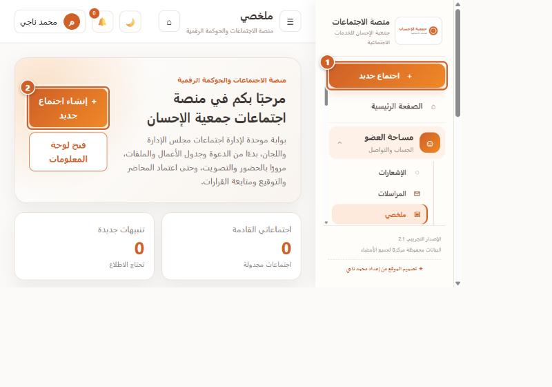
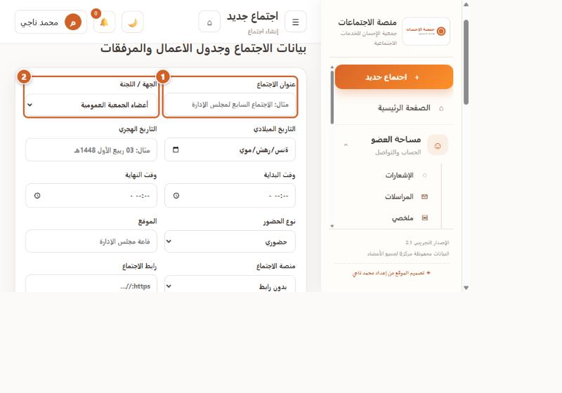
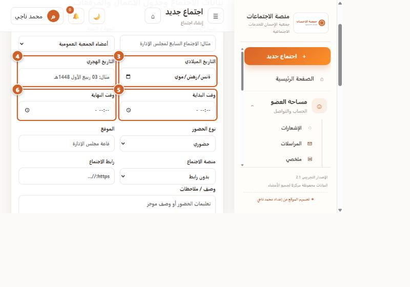
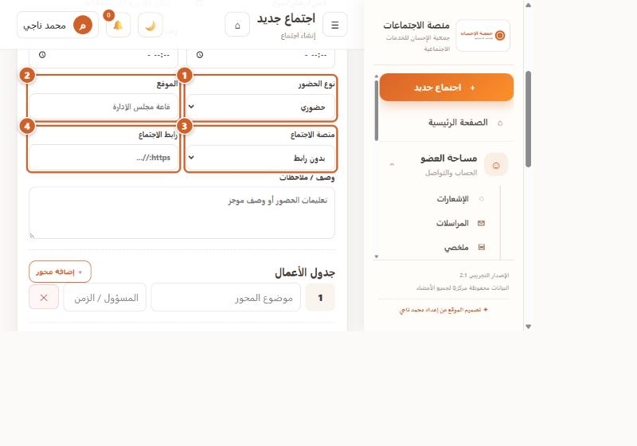
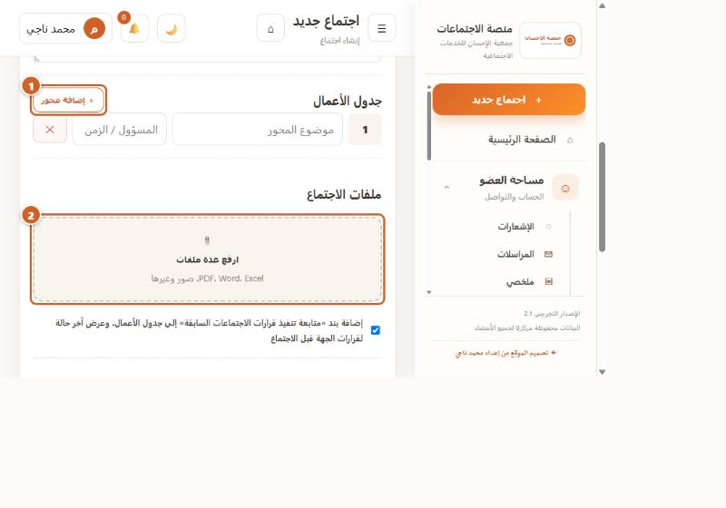
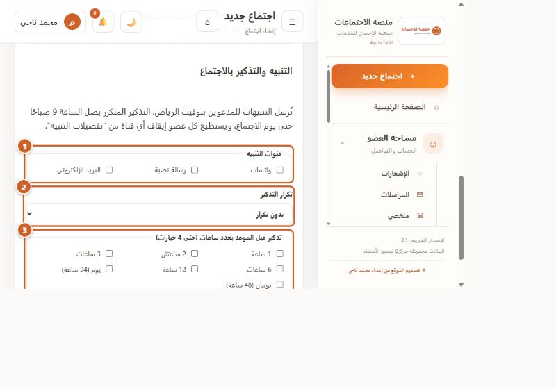
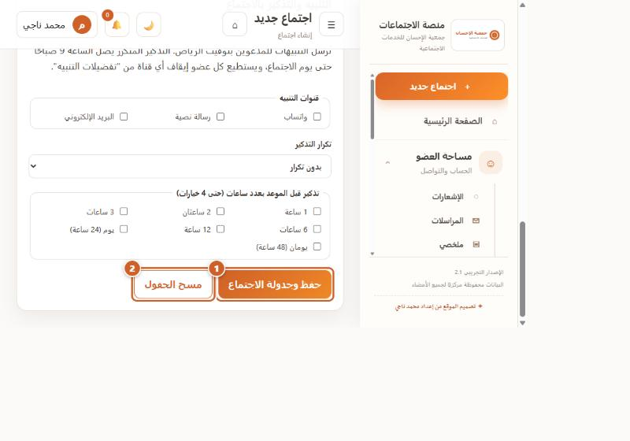
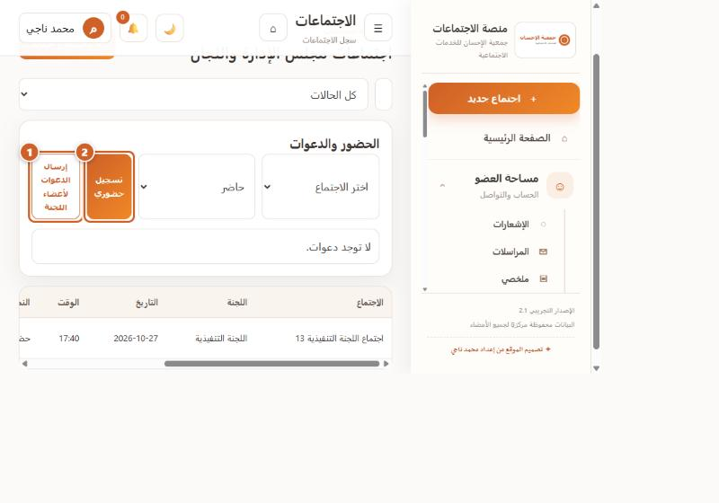

منصة إدارة الاجتماعات والقرارات — دليل المستخدم والإدارة
صفحة نموذجية: الباب الثالث — إنشاء اجتماع جديد · مسودة 0.1 · 29 أكتوبر 2026
هذه صفحة نموذجية لاعتماد الأسلوب قبل استكمال بقية الخدمات. اسم المنصة ورمز QR وخط الجمعية الرسمي بانتظار الاعتماد.
منصة اجتماعات جمعية الإحسان · الباب الثالث: إدارة الاجتماعاتالخدمة 3-1
إنشاء اجتماع جديد
الهدف من الخدمة
جدولة اجتماع للمجلس أو لجنة أو الجمعية العمومية: تحديد موعده ومكانه ورابطه، وإعداد جدول أعماله ومرفقاته، وضبط تذكيرات المدعوين، ثم دعوة أعضاء الجهة.
المستخدمون المخولون
مدير النظام وأمين السر. الزر ظاهر لكل مستخدم، ولم أتحقق بعد هل يرفض الخادم الحفظ لغير المخولين.
المتطلبات السابقة
الدخول بحساب مخوَّل.
وجود جهة (مجلس أو لجنة أو جمعية عمومية) في صفحة «اللجان».
عند الاجتماع الافتراضي: رابط جاهز من Zoom أو Teams أو Meet.
حالة التوثيق: أسماء الأزرار والحقول في هذه الصفحة التُقطت من المنصة الحية بحساب مدير. لم يُحفظ اجتماع فعليًا أثناء التصوير حتى لا تُضاف بيانات إلى الجمعية، فلقطة «النتيجة بعد الحفظ» غير موجودة بعد. الدقة الحالية للقطات مسودة (800 بكسل عرضًا).
الخطوة
الإجراء
الصورة
1
فتح نموذج الإنشاء
الصورة 3-1
2
العنوان والجهة
الصورة 3-2
3
التاريخ والوقت
الصورة 3-3
4
نوع الحضور والموقع والمنصة والرابط
الصورة 3-4
5
جدول الأعمال والملفات
الصورة 3-5
6
التنبيه والتذكير
الصورة 3-6
7
الحفظ
الصورة 3-7
8
الدعوات وتسجيل الحضور
الصورة 3-8
الإصدار 0.1 (مسودة)جمعية الإحسان للخدمات الاجتماعية
منصة اجتماعات جمعية الإحسان · الباب الثالث: إدارة الاجتماعاتإنشاء اجتماع جديد — الخطوات 1 و2
1فتح نموذج الإنشاء

الصورة 3-1: الدائرة 1 زر الشريط الجانبي، والدائرة 2 زر الصفحة الرئيسية.
اضغط الزر البرتقالي ＋ اجتماع جديد أعلى القائمة الجانبية، أو ＋ إنشاء اجتماع جديد في بطاقة الترحيب بالصفحة الرئيسية. تفتح صفحة «إنشاء اجتماع».
2العنوان والجهة

الصورة 3-2: الدائرة 1 عنوان الاجتماع، والدائرة 2 قائمة الجهة / اللجنة.
اكتب عنوان الاجتماع (مثال في الحقل: «الاجتماع السابع لمجلس الإدارة»)، ثم اختر الجهة / اللجنة من القائمة. أعضاء الجهة المختارة هم من يُدعَون.
الإصدار 0.1 (مسودة)صفحة 3
منصة اجتماعات جمعية الإحسان · الباب الثالث: إدارة الاجتماعاتإنشاء اجتماع جديد — الخطوات 3 و4
3التاريخ والوقت

الصورة 3-3: 3 التاريخ الميلادي، 4 التاريخ الهجري، 5 وقت البداية، 6 وقت النهاية.
اختر التاريخ الميلادي، ويمكن كتابة التاريخ الهجري نصًّا (مثال: 03 ربيع الأول 1448هـ)، ثم وقت البداية ووقت النهاية. وقت النهاية يجب أن يكون بعد البداية.
4نوع الحضور والموقع والمنصة والرابط

الصورة 3-4: 1 نوع الحضور، 2 الموقع، 3 منصة الاجتماع، 4 رابط الاجتماع.
نوع الحضور: حضوري، عن بُعد، أو حضوري + عن بُعد. اكتب الموقع. اختر منصة الاجتماع (بدون رابط، Zoom، Microsoft Teams، Google Meet) وألصق رابط الاجتماع على أن يبدأ بـ https.
الإصدار 0.1 (مسودة)صفحة 4
منصة اجتماعات جمعية الإحسان · الباب الثالث: إدارة الاجتماعاتإنشاء اجتماع جديد — الخطوات 5 و6
5جدول الأعمال والملفات

الصورة 3-5: 1 زر «＋ إضافة محور»، 2 منطقة «ارفع عدة ملفات».
في «جدول الأعمال» اكتب موضوع المحور والمسؤول / الزمن، واضغط ＋ إضافة محور لإضافة بنود أخرى (الزر ✕ يحذف البند). في «ملفات الاجتماع» اضغط المنطقة لرفع PDF أو Word أو Excel أو صور. مربع «متابعة تنفيذ قرارات الاجتماعات السابقة» مفعّل افتراضيًا.
6التنبيه والتذكير

الصورة 3-6: 1 قنوات التنبيه، 2 تكرار التذكير، 3 التذكير قبل الموعد بعدد ساعات.
اختر قنوات التنبيه (واتساب، رسالة نصية، البريد الإلكتروني)، وتكرار التذكير، وساعات التذكير قبل الموعد (حتى 4 خيارات). تُرسل التنبيهات بتوقيت الرياض، ويستطيع كل عضو إيقاف أي قناة من «تفضيلات التنبيه».
تنبيه: الإرسال الخارجي (بريد، واتساب، رسائل) يعمل بعد تفعيل مزوّد الإرسال من الإدارة. وإلى ذلك يصل التنبيه داخل المنصة.
الإصدار 0.1 (مسودة)صفحة 5
منصة اجتماعات جمعية الإحسان · الباب الثالث: إدارة الاجتماعاتإنشاء اجتماع جديد — الخطوتان 7 و8
7الحفظ

الصورة 3-7: 1 «حفظ وجدولة الاجتماع»، 2 «مسح الحقول».
راجع البيانات ثم اضغط حفظ وجدولة الاجتماعمرة واحدة وانتظر الرسالة. لتفريغ النموذج اضغط «مسح الحقول». يظهر الاجتماع بعد ذلك في صفحة «الاجتماعات».
8الدعوات وتسجيل الحضور

الصورة 3-8: 1 «إرسال الدعوات لأعضاء اللجنة»، 2 «تسجيل حضوري».
من «الاجتماعات» ← لوحة الحضور والدعوات: اختر الاجتماع، واضغط إرسال الدعوات لأعضاء اللجنة. لتسجيل الحضور اختر الحالة واضغط تسجيل حضوري. لتعديل الاجتماع أو إدارة جدول أعماله ومرفقاته اضغط إدارة في صف الاجتماع.
الإصدار 0.1 (مسودة)صفحة 6
منصة اجتماعات جمعية الإحسان · الباب الثالث: إدارة الاجتماعاتملاحظات ومشاكل شائعة
ملاحظات ومشاكل شائعة
المشكلة
السبب المحتمل
الحل بالترتيب
التواصل مع الدعم
رُفض الحفظ بسبب وقت النهاية
وقت النهاية قبل البداية أو يساويها
1) صحّح وقت النهاية ليكون بعد البداية. 2) احفظ مجددًا.
لا
رُفض رابط الاجتماع
الرابط لا يبدأ بـ https
1) انسخ الرابط كاملًا من Zoom أو Teams أو Meet. 2) تأكد أنه يبدأ بـ https://.
لا
ظهر الاجتماع مكررًا
الضغط على «حفظ» أكثر من مرة
1) افتح «الاجتماعات». 2) اضغط «إدارة» على النسخة الزائدة. 3) اختر «حذف الاجتماع».
لا
رسالة «permission denied»
صلاحية ناقصة على الخادم
1) سجّل الخروج ثم الدخول. 2) تأكد أن دورك مدير أو أمين سر.
نعم، مع نص الرسالة
«لا توجد دعوات» في لوحة الحضور والدعوات
لم تُرسل الدعوات بعد أو لا أعضاء في الجهة
1) اختر الاجتماع من القائمة. 2) تأكد من وجود أعضاء في الجهة من صفحة «الأعضاء». 3) اضغط «إرسال الدعوات لأعضاء اللجنة».
إن بقيت الرسالة
الأخطاء المذكورة أعلاه مأخوذة من منطق التحقق في الكود وليست مُصوَّرة؛ تحتاج إعادة تجربتها على الموقع عند إنشاء اجتماع اختباري.